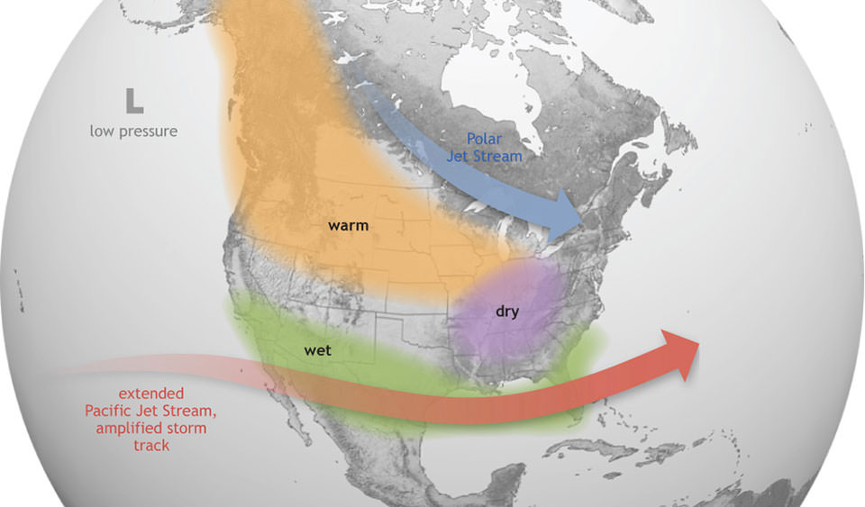

El Niño
El Niño
El Niño is a weather pattern in the Pacific Ocean that last about a year and occurs every two to seven years. During an El Niño event, trade winds weaken and warm water is pushed to the east toward the west coast of the Americas. El Niño is important because it drives weather pattern around the world. In the Americas, the Northern US and Canada are dryer and warmer than usual while the US Gulf Coast and the SouthEast becomes wetter. Identifying and tracking El Niño can therefore help communities plan for more intense precipitation or longer droughts along the Americas.
Image Source: NOAA
El Niño is also important because it influence marine life in the Pacific coast. A good case example is Peru. Generally, the west coast of Peru has great productivity and an abundance of fish because of upwelling that brings nutrient rich deep water up to the surface. However, in times of El Niño the thermocline is pushed down causing upwelling of surface ocean water, not the nutrient rich deep water. This means that during an El Niño event fishery in Peru is dried up as productivity decreases. Tracking El Niño and being able to identify instances of El Niño is important to understand how fish patterns will change for fishery.
Tracking El Niño
One of the best way to track El Niño is to track anomalies in water temperature; these anomalies mean that warm water might be pushed toward the east, raising temperature to levels that it hasn’t been before.